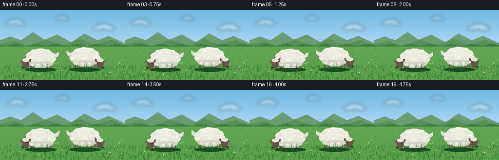
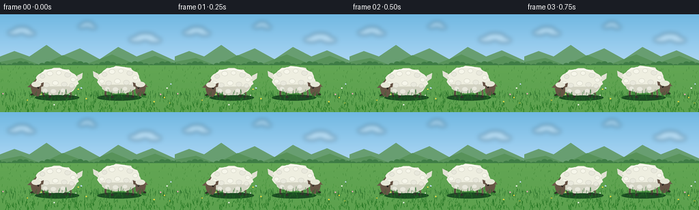
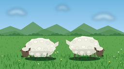

CODING AGENTS AS PIXEL WORLD MODELS
traex/GPT-5.6-Sol · instance_preservation_0017
点击播放 · 原生 RGB 像素
逐轮保存的候选
回放视频、检查图与代码变化。
每份候选均可单独播放。实际图片检查记录在下方工具轨迹中。
候选 01播放与检查图
点击播放 · 原生 RGB 像素


展开代码变化
--- 上一保存版本
+++ 本次保存版本
@@ -0,0 +1,227 @@
+"""Generate a short, hand-illustrated animation of two sheep grazing."""
+from pathlib import Path
+import math
+import numpy as np
+from PIL import Image, ImageDraw, ImageFilter
+
+import artifact_io
+
+
+W, H, N = 256, 144, 20
+S = 4 # supersampling for clean antialiasing
+RNG = np.random.default_rng(1701)
+
+
+def sc(v):
+ return int(round(v * S))
+
+
+def box(coords):
+ return tuple(sc(v) for v in coords)
+
+
+def pts(seq):
+ return [(sc(x), sc(y)) for x, y in seq]
+
+
+def ellipse(d, b, fill, outline=None, width=1):
+ d.ellipse(box(b), fill=fill, outline=outline, width=sc(width) if outline else 1)
+
+
+def line(d, xy, fill, width=1, joint="curve"):
+ d.line(pts(xy), fill=fill, width=sc(width), joint=joint)
+
+
+def polygon(d, xy, fill):
+ d.polygon(pts(xy), fill=fill)
+
+
+# Stable texture locations make every animal and the landscape persist coherently.
+grass_back = [(float(RNG.uniform(0, W)), float(RNG.uniform(78, 119)),
+ float(RNG.uniform(1.2, 4.0)), float(RNG.uniform(0, 6.28))) for _ in range(260)]
+grass_front = [(float(RNG.uniform(0, W)), float(RNG.uniform(116, 145)),
+ float(RNG.uniform(2.0, 7.0)), float(RNG.uniform(0, 6.28))) for _ in range(430)]
+flowers = [(float(RNG.uniform(4, 252)), float(RNG.uniform(100, 137)),
+ int(RNG.integers(0, 4))) for _ in range(27)]
+
+
+def draw_background(im, t):
+ d = ImageDraw.Draw(im)
+ # Soft summer sky.
+ for y in range(sc(88)):
+ p = y / sc(88)
+ col = (int(112 + 75*p), int(184 + 38*p), int(226 + 22*p))
+ d.line([(0, y), (sc(W), y)], fill=col)
+
+ # Wispy clouds, moving extremely slowly so the camera still feels locked.
+ cloud = Image.new("RGBA", im.size, (0, 0, 0, 0))
+ cd = ImageDraw.Draw(cloud)
+ drift = 1.4 * t
+ for cx, cy, rx in [(32+drift, 25, 19), (213+drift*.55, 35, 22), (128+drift*.35, 16, 13)]:
+ for ox, oy, rr in [(-.58*rx, 2, .52*rx), (0, -2, .67*rx), (.58*rx, 3, .49*rx)]:
+ ellipse(cd, (cx+ox-rr, cy+oy-rr*.38, cx+ox+rr, cy+oy+rr*.38), (255,255,255,88))
+ cloud = cloud.filter(ImageFilter.GaussianBlur(sc(3.2)))
+ im.alpha_composite(cloud)
+ d = ImageDraw.Draw(im)
+
+ # Layered distant hills.
+ polygon(d, [(0,72),(0,62),(21,54),(43,62),(68,45),(91,61),(117,50),(146,66),
+ (173,48),(200,62),(223,53),(256,68),(256,91)], (104,158,113,255))
+ polygon(d, [(0,77),(0,70),(31,64),(60,75),(92,60),(127,73),(164,59),(195,72),
+ (227,61),(256,72),(256,97)], (88,146,90,255))
+ # Tiny hedgerow texture, clearly not sheep silhouettes.
+ for x in range(-3, 260, 8):
+ yy = 74 + 2.2*math.sin(x*.15)
+ ellipse(d, (x-4, yy-3, x+5, yy+4), (62,124,69,255))
+
+ # Meadow base gradient.
+ for yy in range(sc(75), sc(H)):
+ p = (yy/sc(S)-75)/(H-75)
+ col = (int(80-22*p), int(151-18*p), int(65-23*p), 255)
+ d.line([(0,yy),(sc(W),yy)], fill=col)
+
+ # Fine, distant grass.
+ for x, y, h, phase in grass_back:
+ sway = math.sin(t*1.1 + phase) * .7
+ c = (63,132 + int((y-78)*.35),55,210)
+ line(d, [(x,y),(x+sway,y-h)], c, .42)
+
+ # A few small flowers add depth and pastoral specificity.
+ petal_cols = [(246,220,68,255),(244,244,232,255),(185,217,242,255),(235,169,182,255)]
+ for x, y, kind in flowers:
+ line(d, [(x,y),(x+.25,y-2.8)], (48,112,48,220), .45)
+ if y > 105:
+ ellipse(d, (x-1.05,y-4.0,x+1.05,y-2.0), petal_cols[kind])
+
+
+def wool_outline(cx, cy, rx, ry, phase=0.0):
+ """Scalloped but stable silhouette for a fluffy fleece."""
+ out = []
+ count = 44
+ for i in range(count):
+ a = 2*math.pi*i/count
+ ripple = 1 + .035*math.sin(11*a+phase) + .022*math.sin(17*a-phase*.7)
+ out.append((cx + rx*ripple*math.cos(a), cy + ry*ripple*math.sin(a)))
+ return out
+
+
+def draw_sheep(im, spec, t, idx):
+ """Draw one persistent sheep, head lowered to the grass."""
+ d = ImageDraw.Draw(im, "RGBA")
+ cx, cy = spec["body"]
+ facing = spec["facing"]
+ # Independent, slow breathing and tiny weight shift.
+ breathe = math.sin(t*1.45 + idx*2.2)
+ body_y = cy + .55*breathe
+ head_bob = .9*math.sin(t*2.0 + idx*1.9) + .28*math.sin(t*4.3+idx)
+ hx = spec["head"][0] + facing*.65*math.sin(t*.75+idx)
+ hy = spec["head"][1] + head_bob
+
+ # Ground shadow anchors each animal.
+ ellipse(d, (cx-32, 118, cx+33, 127), (27,75,34,55))
+
+ # Four legs. Rear legs are muted, near legs darker and sharper.
+ leg_x = [cx-19, cx-10, cx+12, cx+20]
+ for j, lx in enumerate(leg_x):
+ near = j in (0, 2)
+ top = body_y + 13 + (1 if not near else 0)
+ hoofy = 121 + (j%2)*.8
+ col = (91,76,65,255) if near else (111,95,80,245)
+ line(d, [(lx,top),(lx + (-1 if j<2 else 1),hoofy-2)], col, 3.0 if near else 2.5)
+ ellipse(d, (lx-2.1,hoofy-2.3,lx+2.4,hoofy+1.2), (48,48,42,255))
+
+ # Tail behind body; occasional flick, different timing for each sheep.
+ tail_side = -facing
+ flick = math.sin(t*5.2) if (idx == 0 and 2.0 < t < 2.8) else math.sin(t*4.7) if (idx == 1 and 3.3 < t < 4.1) else 0
+ tx = cx + tail_side*30
+ polygon(d, [(tx,body_y-9),(tx+tail_side*(8+2*flick),body_y-13-3*abs(flick)),
+ (tx+tail_side*7,body_y-5),(tx,body_y)], (225,225,211,255))
+
+ # Neck descends naturally from the fleece to the lowered head.
+ neck_x = cx + facing*25
+ polygon(d, [(neck_x-5,body_y-4),(neck_x+facing*11,hy-13),
+ (neck_x+facing*18,hy-7),(neck_x+2,body_y+10)], (104,88,73,255))
+ line(d, [(neck_x+facing*2,body_y+2),(hx-facing*2,hy-5)], (74,63,53,180), 1)
+
+ # Main fleece silhouette and shaded under-fleece.
+ polygon(d, wool_outline(cx,body_y,31,20,idx*.7), (238,238,224,255))
+ # Warm underside gives volume.
+ polygon(d, [(cx-27,body_y+7),(cx-21,body_y+16),(cx-5,body_y+20),
+ (cx+17,body_y+18),(cx+29,body_y+7)], (211,211,195,155))
+
+ # Layered wool curls, fixed to each body, for recognizable texture.
+ tufts = [(-21,-8,7),(-10,-12,8),(3,-13,7),(16,-10,8),(24,-3,7),
+ (-25,2,7),(-15,5,8),(-2,2,8),(11,4,8),(22,6,7),
+ (-17,13,7),(-5,14,8),(9,13,7)]
+ for k,(ox,oy,r) in enumerate(tufts):
+ shade = 246 if (oy < 3 and k%3) else 232
+ ellipse(d, (cx+ox-r*.55,body_y+oy-r*.45,cx+ox+r*.55,body_y+oy+r*.45),
+ (shade,shade,shade-12,180), (207,207,194,90), .55)
+ # Bright top rim from overhead light.
+ line(d, [(cx-22,body_y-13),(cx-10,body_y-18),(cx+7,body_y-18),(cx+20,body_y-13)],
+ (255,255,245,190), 1.15)
+
+ # Long ears behind head. One brief ear twitch per sheep.
+ twitch = 0
+ if idx == 0 and 1.0 < t < 1.75:
+ twitch = 3.5*math.sin((t-1.0)/.75*math.pi)
+ if idx == 1 and 2.5 < t < 3.25:
+ twitch = 3.5*math.sin((t-2.5)/.75*math.pi)
+ polygon(d, [(hx-facing*3,hy-11),(hx-facing*11,hy-14-twitch),(hx-facing*10,hy-8),(hx-facing*2,hy-6)],
+ (101,82,68,255))
+ polygon(d, [(hx+facing*1,hy-9),(hx+facing*9,hy-11+twitch*.35),(hx+facing*7,hy-5),(hx,hy-4)],
+ (115,91,72,255))
+
+ # Face is side-on and points to the grass; muzzle nearly touches blades.
+ polygon(d, [(hx-facing*7,hy-12),(hx+facing*5,hy-12),(hx+facing*8,hy-5),
+ (hx+facing*5,hy+5),(hx-facing*3,hy+7),(hx-facing*7,hy+1)], (103,85,70,255))
+ # Forehead cap visually connects head and fleece.
+ ellipse(d, (hx-7,hy-15,hx+7,hy-7), (230,230,214,255))
+ ellipse(d, (hx-facing*3.0-1.25,hy-7.3,hx-facing*3.0+1.25,hy-4.8), (27,26,22,255))
+ ellipse(d, (hx-facing*3.25-.35,hy-7.1,hx-facing*3.25+.35,hy-6.45), (245,236,212,255))
+
+ # Dark nose and a chewing jaw line; the mouth remains at grass level.
+ nose_x = hx + facing*6.3
+ nose_y = hy + 4.2
+ ellipse(d, (nose_x-2.1,nose_y-1.7,nose_x+2.1,nose_y+1.5), (46,43,37,255))
+ chew = .7*math.sin(t*5.6 + idx*1.6)
+ line(d, [(nose_x-facing*1,nose_y+1),(nose_x-facing*4,nose_y+2+chew)], (45,42,36,220), .7)
+
+ # A few bent blades right at the mouth establish active eating.
+ for q in range(3):
+ gx = nose_x + facing*(q*1.6-1.2)
+ line(d, [(gx,122.5),(gx-facing*(2.3+q*.4),nose_y+.4)], (41,107+q*8,42,255), .65)
+
+
+def draw_foreground(im, t):
+ d = ImageDraw.Draw(im, "RGBA")
+ # Foreground blades overlap hooves and noses, integrating sheep with meadow.
+ for x, y, h, phase in grass_front:
+ sway = math.sin(t*1.15 + phase) * (1.0 + (y-116)/28*.7)
+ base_col = (33+int((y-116)*.3), 105+int((y-116)*.7), 37, 220)
+ line(d, [(x,y),(x+sway,y-h)], base_col, .55 if y < 132 else .75)
+ if h > 5.2 and int(x*7+y)%11 == 0:
+ line(d, [(x+sway*.45,y-h*.46),(x+sway+1.8,y-h*.7)], base_col, .45)
+
+
+def make_frame(i):
+ t = i / 4.0
+ im = Image.new("RGBA", (W*S,H*S), (0,0,0,255))
+ draw_background(im, t)
+ # Exactly two sheep, with opposing orientations and separated silhouettes.
+ sheep_left = {"body": (83,99), "head": (53,114), "facing": -1}
+ sheep_right = {"body": (174,96), "head": (205,113), "facing": 1}
+ draw_sheep(im, sheep_left, t, 0)
+ draw_sheep(im, sheep_right, t, 1)
+ draw_foreground(im, t)
+ im = im.convert("RGB").resize((W,H), Image.Resampling.LANCZOS)
+ return np.asarray(im, dtype=np.uint8)
+
+
+def main():
+ frames = np.stack([make_frame(i) for i in range(N)])
+ artifact_io.save(frames, Path(__file__).resolve().parent)
+
+
+if __name__ == "__main__":
+ main()
可观测工具轨迹
实际执行的命令与返回图片。
命令 1exit 0
/bin/bash -lc "cat prompt.txt && printf '\\n---GENERATION_RULES---\\n' && cat GENERATION_RULES.md && printf '\\n---TASK_SPEC---\\n' && cat task_spec.json"
命令 2exit 0
/bin/bash -lc "find . -maxdepth 2 -type f -printf '%p\\n' | sort"
命令 3exit 0
/bin/bash -lc "sed -n '1,240p' artifact_io.py"
命令 4exit 0
/bin/bash -lc 'python generate.py'
视觉工具实际返回图片 1

视觉工具实际返回图片 2

保存候选 1 份；完成命令 4 次；可验证图片返回 2 张。原始 API 响应与完整日志保留在本地。